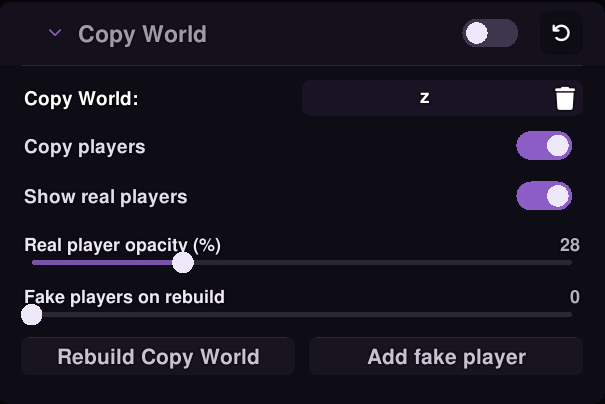
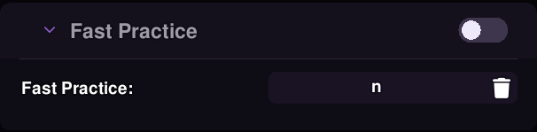

Practice
Practice anywhere.
Fast Practice & Copy World
Train from any server with Fast Practice and Copy World. Rehearse a section in a local practice world, or copy the current world to try your next move at your own pace.
Adjust which players are copied and how real players appear while you practice. Camera controls, hook aim lines, edge information and finish prediction help you understand the next attempt.